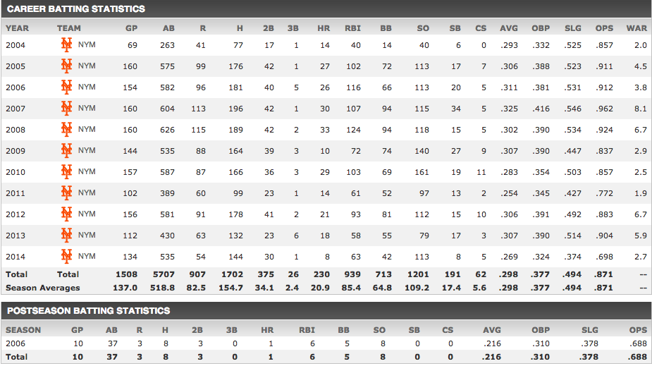

This is David Wright's page.
AP New York - The Mets season had reached the point, in the second week of September, when it seemed they were most concerned about preparing for the next year. They wanted to cultivate their young talent, keep everyone healthy, and then, they hoped, win. Perhaps nothing dimmed the Mets’ look toward the future more than the news that they were shutting down David Wright for the season. Wright met with team doctors to discuss the continued soreness in his bothersome left shoulder after Monday’s game. They sent him for a magnetic resonance imaging examination Tuesday that revealed what the Mets described as persistent inflammation in the left rotator cuff. “Based on the M.R.I. and examination today, David will not play for the remainder of the 2014 season,” the Mets said in a statement after the game. “He will, instead, rest to abate the inflammation in the rotator cuff, and then begin a rehabilitation program to strengthen the entire shoulder.” Wright is expected to undergo a six-week rehabilitation program, after which he will be re-evaluated. The Mets indicated that they did not expect he would need surgery. In a news conference Tuesday night after the Mets’ 2-0 victory against the Colorado Rockies at Citi Field, Wright acknowledged that the shoulder had been consistently sore since June, when he jammed it sliding headfirst on a muddy field. He said he had also worried about further injuring himself and possibly affecting the 2015 season. “I think that there were times where I should have done better, that I could have done better,” said Wright, who finishes his season with a .269 average, 8 home runs and 63 runs batted in over 134 games. “It’s obvious this season has left a sour taste in my mouth, as far as both the injury side of it and the production side of it. But I’m confident after getting healthy and going through as normal of an off-season as possible that I’ll return doing what I firmly believe that I’m capable of doing on the baseball field.” Before the next question, General Manager Sandy Alderson leaned in and said: “Let me just add, very quickly, putting the numbers in perspective, David did what captains do. He persevered. He kept going. He gutted it out. Numbers or no numbers. He did what we expected.”
 Click here to go home.
Click here to go home.